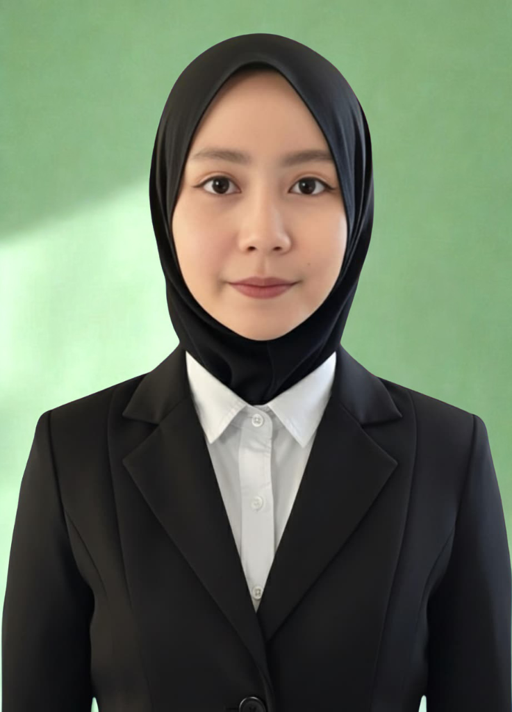

Profil Pendidik
Setiap guru punya cerita. Ini cerita saya tentang perjalanan belajar, keyakinan dalam mengajar, dan harapan untuk masa depan pendidikan Indonesia.

Siti Karunia Dewi
Calon Guru Profesional Informatika
Biografi & Profil Pendidik
Saya Siti Karunia Dewi, seorang lulusan S1 Pendidikan Teknologi Informasi di STKIP PGRI Situbondo, dan sekarang menempuh Program Pendidikan Profesi Guru Prajabatan di Universitas Negeri Malang.
Perjalanan saya menuju dunia pendidikan tidak hanya dibentuk melalui bangku perkuliahan. Saya pernah mendapatkan pengalaman sebagai Staff Tata Usaha, kemudian menjadi pengajar di SMK Farida Adz-dzikraa, serta menjadi tutor di Bimbel Smart Solution. Saya juga memiliki pengalaman magang kerja internal di STKIP PGRI Situbondo. Berbagai pengalaman tersebut mempertemukan saya dengan beragam karakter, tanggung jawab, serta situasi yang semakin memperkuat ketertarikan saya terhadap dunia pendidikan.
Latar belakang saya di bidang Pendidikan Teknologi Informasi membuat saya percaya bahwa teknologi bukan sekadar alat, tetapi dapat menjadi jembatan untuk menciptakan pembelajaran yang lebih menarik, interaktif, dan bermakna.
Melalui Pendidikan Profesi Guru (PPG), saya sedang melanjutkan perjalanan untuk bertumbuh menjadi pendidik yang lebih profesional dan reflektif. E-portofolio ini menjadi ruang untuk mendokumentasikan proses tersebut mulai dari pengalaman, praktik pembelajaran, karya, refleksi, hingga berbagai proses belajar yang saya jalani.
Karena bagi saya, menjadi guru bukan tentang menjadi sempurna, tetapi tentang terus belajar untuk menjadi lebih baik dan memberikan arti bagi setiap peserta didik yang saya temui.
Keunikan & Identitas Daerah Asal
Saya lahir dan tumbuh di Banyuwangi, sebuah daerah di ujung timur Pulau Jawa yang kaya akan keindahan alam, budaya, dan tradisi. Banyuwangi bagi saya bukan hanya tempat asal, tetapi juga bagian dari perjalanan yang membentuk karakter dan nilai-nilai hidup saya. Daerah yang dikenal dengan julukan The Sunrise of Java ini kaya akan kearifan lokal Suku Osing, tradisi seni yang adiluhung, serta keajaiban alam yang mempesona.
Kekayaan budaya Banyuwangi terpancar kuat dari ikon perwujudan syukur seperti Tari Gandrung, ritual adat syukuran bumi Kebo-Keboan, hingga tradisi kebersamaan Tumpeng Sewu khas Desa Adat Kemiren. Tidak hanya kebudayaannya, keajaiban alamnya pun amat tersohor mulai dari fenomena langka dunia Blue Fire (Api Biru) di Kawah Ijen, keasrian Pantai Pulau Merah, hingga pesona Teluk Hijau. Seluruh kekayaan ini makin lengkap dengan sajian kuliner khas autentik yang menggugah selera seperti Sego Tempong, Rujak Soto, Pecel Pitik Osing, serta cita rasa renyah Kue Bagiak yang menjadi identitas kebanggaan tanah kelahiran saya.

Galeri Keunikan & Pesona Banyuwangi


Visi & Misi Pendidik
Visi Pribadi untuk Pendidikan di Indonesia
Visi saya untuk pendidikan di Indonesia adalah terwujudnya pendidikan yang memberikan kesempatan kepada setiap murid untuk berkembang sesuai dengan kemampuan dan kebutuhannya. Menurut saya, pendidikan tidak hanya tentang nilai, tetapi juga tentang membentuk murid yang percaya diri, bertanggung jawab, kreatif, dan mampu menggunakan teknologi dengan baik.
Visi Pribadi sebagai Calon Guru
Visi saya sebagai calon guru adalah menjadi guru Informatika yang profesional, sabar, bertanggung jawab, dan mampu memberikan pembelajaran yang bermakna. Saya ingin membantu murid berkembang, mengenali kemampuan dirinya, berani mencoba, dan percaya bahwa dirinya mampu untuk belajar dan berkembang.
Misi Utama
- Terus belajar dan mengembangkan diri agar menjadi guru yang memiliki kompetensi dan mampu mengikuti perkembangan teknologi serta pendidikan.
- Menciptakan pembelajaran yang menarik dan bermakna, dengan memanfaatkan teknologi dan kegiatan yang sesuai dengan kebutuhan murid.
- Menjadi guru yang sabar, disiplin, bertanggung jawab, dan dapat menjadi teladan bagi murid dalam kehidupan sehari-hari.
- Membantu murid mengenali dan mengembangkan potensinya, serta mendorong mereka untuk berani mencoba, tidak mudah menyerah, dan percaya terhadap kemampuan dirinya.
Inspirasi Menjadi Guru
Inspirasi saya untuk menjadi guru profesional berawal dari pengalaman hidup yang tidak pernah saya rencanakan sebelumnya. Awalnya saya tidak memiliki keinginan untuk menjadi guru. Saya masuk ke perguruan tinggi tanpa benar-benar memahami bahwa kampus yang saya tempati merupakan sekolah tinggi keguruan dan ilmu pendidikan. Bahkan, saya baru menyadari hal tersebut ketika memasuki semester 4 perkuliahan S1. Seiring berjalannya waktu, saya mulai belajar menerima dan menjalani proses tersebut hingga akhirnya mampu bertahan sampai lulus. Dorongan dan dukungan dari orang tua juga menjadi alasan terbesar saya untuk terus melanjutkan pendidikan di bidang keguruan. Dari pengalaman itu, muncul keinginan dalam diri saya untuk menjadi seseorang yang berbeda dari saudara-saudara kandung saya yang sebagian besar berprofesi sebagai pedagang. Saya ingin membuktikan bahwa saya mampu menempuh jalan hidup yang berbeda dan memberikan manfaat melalui dunia pendidikan.
Model Guru yang Dituju
Sebagai calon guru profesional, saya berkomitmen menjadi pendidik yang mampu membimbing, menginspirasi, dan mengembangkan potensi murid melalui pembelajaran yang aktif, kreatif, inovatif, serta berpusat pada murid. Saya juga berupaya menciptakan lingkungan belajar yang nyaman, positif, dan menghargai keberagaman karakter murid.
Kompetensi Guru yang Ingin Dibangun
1. Kompetensi Pedagogik
Mampu memahami karakteristik murid, merancang pembelajaran yang efektif, serta melaksanakan evaluasi pembelajaran secara tepat dan berkelanjutan.
2. Kompetensi Profesional
Menguasai materi pembelajaran secara mendalam dan mampu mengaitkan materi dengan kehidupan sehari-hari agar pembelajaran lebih bermakna.
3. Kompetensi Sosial
Membangun komunikasi yang baik dengan murid, rekan guru, orang tua, dan lingkungan sekolah secara santun dan kolaboratif.
4. Kompetensi Kepribadian
Menjadi pribadi yang disiplin, bertanggung jawab, sabar, percaya diri, serta mampu menjadi teladan yang baik bagi murid.